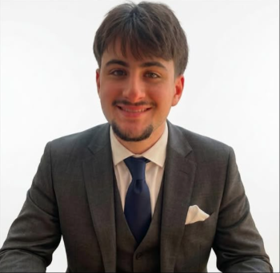

Electrical Engineering Student | York University
I am running for President of the Lassonde Engineering Society.
Voting opens March 23 @ 9:00 AM
VIEW PLATFORM & COUNTDOWNElectrical Engineering student with hands-on experience in embedded systems, power management, and digital logic. Currently seeking to leverage my technical background in EV systems and FPGA design to contribute to innovative engineering solutions.
York University — Bachelor of Engineering, Electrical Engineering
Expected Graduation: 2028
Relevant Coursework: Intro to Embedded Systems, Electric Circuits I, Discrete Mathematics, Physics (Fields and Strata)
Jan 2026 - Present
Oct 2025 - February 2026
June 13, 2025 - Present
Feb 2026 - Present
Oct 2025 - Present
Sep 2024 - Present (Spirit Captain since Jan 2026)
Oct 2025 - Present
Managing corporate sponsorships and external communications to secure funding for structural competition materials.